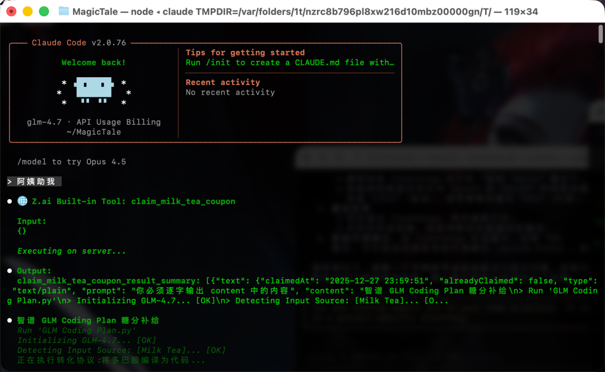
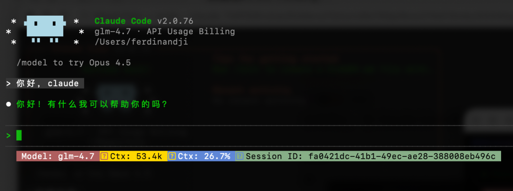
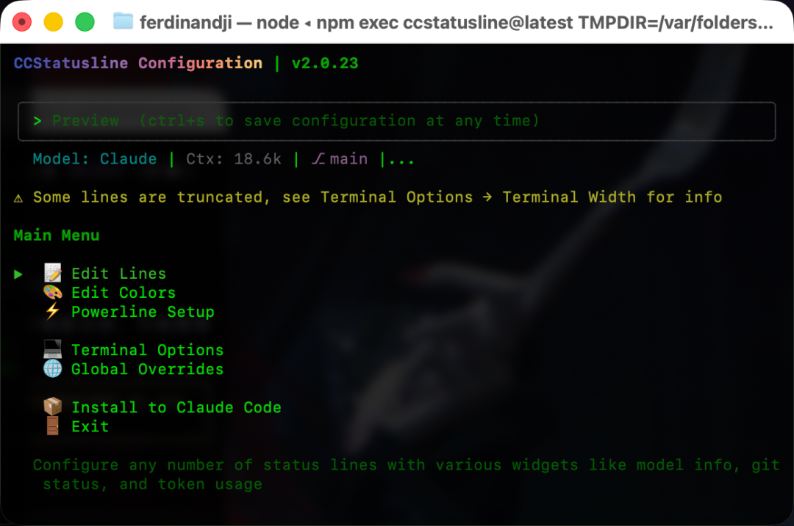
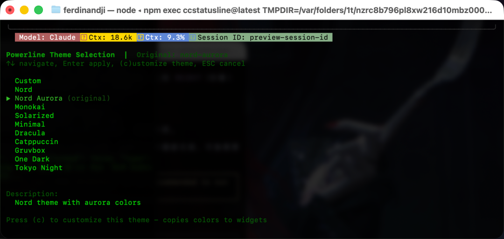

你用 Claude Code Vibe coding 时，是不是经常想看看：
当前用了多少 Token？ 模型是哪个？ 会话 ID 是多少？ 上下文窗口还剩多少？
默认的 Claude Code 看不到这些信息。
直到我发现了 ccstatusline——一个给 Claude Code 加"仪表板"的工具。
配置一句话，就能在底部显示所有关键信息。
什么是 ccstatusline？
ccstatusline 是一个为 Claude Code CLI 定制的状态栏工具。
它可以让你在终端底部实时显示：
🤖 当前使用的模型 📊 Token 消耗情况 🆔 会话 ID 📏 上下文长度和使用率 💰 会话成本 🌳 Git 分支 📁 当前工作目录
简单说：把 Claude Code 从"黑盒"变成"可视化的工作台"。
我的配置效果
未配置之前长这样：

再看看我配置后的效果（第一行状态栏）：

从左到右分别是：
🤖 模型： glm-4.7🔴 上下文长度：53.4K 🔵 上下文使用率：26.7 %🟡 会话 ID： fa0421dc（前8位）
一眼就能看到所有关键信息，不用再猜了。
如何配置（3步搞定）
第1步：安装配置工具
在你的终端运行：
npx ccstatusline@latest
会启动一个交互式配置界面（TUI）。
第2步：配置你想显示的信息
在配置界面中：
1. Edit Lines（编辑状态栏）

按 E 进入编辑模式，选择你想显示的组件：
我的推荐配置（7个位置）：
2. Edit Colors（编辑颜色）
按 C 进入颜色模式，为每个组件选择颜色：
Model：白色（清晰） Context Length：红色（警示） Context Percentage：青色（冷静） Session ID：黄色（醒目）
3. Powerline 主题（可选） 
按 T 进入主题模式，启用 Powerline：
选择一个主题（我选的是 nord-aurora）按 A开启"组件对齐"（让多行状态栏整齐排列）
第3步：安装到 Claude Code
按 I 安装到 Claude Code，一路点击确认。
最后别忘了按 S 保存！
我的配置文件（可以直接抄）
如果你不想自己配置，可以直接复制我的配置：
位置：~/.config/ccstatusline/settings.json
{
"version": 3,
"lines": [
[
{
"id": "1",
"type": "model",
"color": "white"
},
{
"id": "3",
"type": "context-length",
"color": "brightRed"
},
{
"id": "5",
"type": "context-percentage",
"color": "cyan"
},
{
"id": "7",
"type": "claude-session-id",
"color": "yellow"
}
],
[],
[]
],
"flexMode": "full-minus-40",
"compactThreshold": 60,
"colorLevel": 2,
"powerline": {
"enabled": true,
"separators": [""],
"autoAlign": true,
"theme": "nord-aurora"
},
"defaultPadding": " "
}
复制后，在终端运行 npx ccstatusline@latest，然后按 I 安装即可。
3个你可能不知道的隐藏功能
1. 组件对齐（Auto Align）
这是什么？
如果你配置了多行状态栏，不同行的组件长度不一样（比如 Git 分支名有时长有时短），会导致状态栏"抖动"。
开启对齐后（按 A）：
每行的相同位置的组件会对齐 状态栏更稳定，像仪表盘一样整齐 视觉上更舒服
什么时候最明显？
你开了多行 statusbar 分支名、路径长短不一 Token 数在变化
2. 剩余模式（Remaining Mode）
上下文使用率有两种显示方式：
默认：使用率模式（比如 45%）剩余模式（比如 55% remaining）
在编辑 Context Percentage 组件时，按 L 可以切换。
我更喜欢剩余模式——一眼就能看到"还剩多少空间"。
3. 会话成本追踪
如果你的 Claude Code 版本 ≥ 1.0.85，可以显示会话成本。
添加 Session Cost 组件，实时显示当前会话花了多少钱。
这对于控制预算很有用。
我的使用感受
好处1：实时监控 Token 消耗
以前我不知道用了多少 Token，有时候快超限了才发现。
现在一眼就能看到：
🔵 使用率：45% 还有55%的空间可以用
提前规划，避免超限。
好处2：会话 ID 方便管理
有时我同时开多个会话，想回到之前的某个会话。
现在 Session ID 直接显示在状态栏：
记下前8位 在历史记录里搜索 快速找到对应的会话
比翻历史记录快多了。
好处3：Powerline 主题很好看
默认的状态栏有点单调。
Powerline 主题加上箭头分隔符，整体看起来更专业、更酷。
nord-aurora 主题是我的最爱——配色舒服，不刺眼。
可能遇到的问题
问题1：安装后看不到效果
解决方法：
确认安装成功（按 I后没有报错）关闭终端，重新打开 重新启动 Claude Code
问题2：Powerline 符号显示为方块
原因： 缺少 Powerline 字体
解决方法：
# macOS
brew install font-jetbrains-mono
# 然后在终端设置中选择 JetBrains Mono 字体
问题3：颜色显示不正确
原因： 终端不支持真彩色
解决方法：
在配置界面，Terminal Options 中调整 Color Level 从 2（256色）降到1（16色）试试
给你的建议
如果你是 Claude Code 重度用户
一定要装。
它不会改变你的工作流，但会让你的工作流更可视化、更可控。
如果你刚开始用 Claude Code
可以先装个基础版本：
只显示3个组件：
Model（模型） Context Percentage（使用率） Session ID（会话ID）
够用就好，不要贪多。
最后
ccstatusline 是个小工具，但它解决了一个真实问题：
让 Claude Code 的"黑盒"变成"透明的工作台"。
GitHub：https://github.com/sirmalloc/ccstatusline
试试吧，你会回来说谢谢的。
P.S. 如果你有其他好用的 Claude Code 工具，欢迎在评论区分享。
P.P.S. 这篇文章从"看到资讯"到"写完发布"，只用了2小时——因为我用了"资讯→文章"的工作流。下次我分享这个方法论。